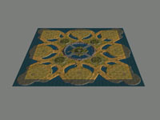
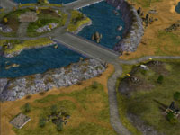
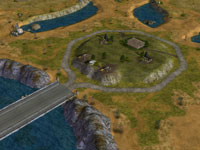
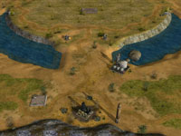
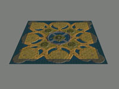
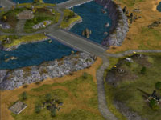
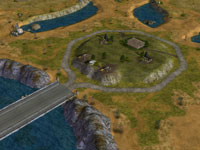
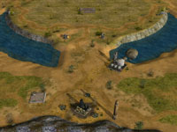

   
   Download this map for Generals Zero Hour
This is my first map for C&C Generals Zero Hour. It is based on the map Land & Sea. Basically, any skirmish map for the original C&C Generals can be easily modified to work with Zero Hour.
A large meadow/desert map with lots of water. A central island surrounded by water and mountains. I have added artillery towers, repair pads, and a reinforcement pad.
One supply dock in each base area. Extra supply piles nearby and a total of five extra supply docks to fight over. Twelve oil derricks and two refineries. Four (useless?) repair pads and one reinforcement pad on the central island.
Works very well. The computers starting in the corners will expand earlier and build an impressive amount of units unless stopped. Note: It seems the computers need some extra building space in Zero Hour compared to the original game.